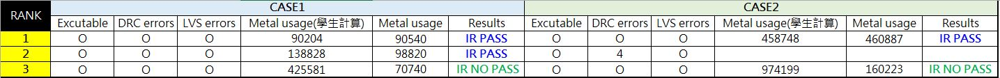

A power distribution network (PDN) delivers current from power sources to all devices (including standard cells and hard IPs). As the process shrinks into the deep sub-micron technology, higher chip frequency and increasing power consumption may cause fluctuation of power supply levels and lead to design failure. A robust PDN is essential to ensure reliable circuit operations on a chip. In this problem, given an initial PDN, the contestants have to optimize the power routing with minimum routing resource while satisfying all specified IR-drop constraints.
To reduce the voltage drop, the PDN optimization techniques include wire sizing, wire movement and wire density increment. In addition to these techniques, the contestants are also allowed to re-design or modify the given power routing, resulting in a routing topology, which is different from the initial PDN.
Fig.1 Netlist and floorplan of a PDN.
Figure 1 shows the netlist and its initial floorplan of a PDN. There are three hard IPs, B1, B2, and B3, and three power sources, VDD1, VDD2, and VDD3. Each power source is connected to some power pins on different hard IPs, where VDD1 is connected to VDD_A/B1, VDD2 is connected to VDD_B/B1, and VDD3 is connected to both VDD_A/B2 and VDD_A/B3. Each power net can be routed with horizontal and vertical metal wires. A metal via must be applied when connecting different metal layers. The usage of upper metal layers is more preferable because of smaller resistance and capacitance.
Fig.2 Initial power routing.
Figure 2 shows an example of the initial power routing of the PDN. In this example, both horizontal and vertical metal wires in each metal layer can be used for routing power nets. Note that, a hard IP may only employ a certain number of lower metal layers for its internal routing. Hence, upper metal layers, which are not used by hard IPs, can also be used for routing over the underlying hard IPs.
Fig.3 PDN optimization.
An optimized power routing result is given in Figure 3 based on the following procedure: First of all, we widen the power net from VDD1 to B1/VDD_A in order to satisfy the IR-drop constraint. Then, we shorten the length of the power net from VDD2 to B1/VDD_B. In this example, B3 only contains the layers of Metal 1 to Metal 5, so we can route over B3 with Metal 6 for shorter wire length. Finally, we split the horizontal wires on Metal 6 from VDD3 to B2/VDD_A into three parallel wires. As a result, the resistance of these power wires is nearly threefold reduction, and hence the IR-drop constraint can be satisfied.
The contestants have to produce a power routing result with minimized usage of routing resources. The final routing solution should meet the voltage drop constraints at each power pin of all hard IPs. The NGSPICE software is provided to calculate the voltage drop at each power pin.
The problem is given the following inputs:
A program must be developed to read/write a DEF file that contains the actual layout including metal wires and vias. It must also generate some other information given in Section 4. Figure 4 shows an output DEF file which describes a power routing solution to the problem given in Figure 3. Note that the dimensions of metal vias can be found in the given LEF file (tech.lef).
Fig.4 An output DEF file for a routing solution.
A LEF (tech.lef) file contains information about resistance per square of metal wires and vias. The resistance of a metal wire on layer N can be calculated by the following equation:
$R_{MetalN}=R_{PeerSq} \times \frac{Metal\ Length}{Metal\ Width}$
An example of the total resistance of the power net from VDD2 to B1/VDD_B is calculated as follows:
$R_{VDD2\_B1\_VDD\_B}=R_{Metal5(horizontal)}+R_{via56}+R_{Metal6(Vertical)}+R_{Metal6(horizontal)}$
$=0.04 \times \frac{(113.7-0)}{10} + 1 + 0.02 \times \frac{(547.9-495)}{10} + 0.02 \times \frac{(1701-103.7)}{10}$
$=0.4548+1+0.1058+3.1946=4.7552\ ohm$
Suppose the voltage of all power sources is 1.0V. According to the calculated resistances, as shown in Figure 5, the contestants further need to generate a SPICE netlist for IR-drop simulation using the NGSPICE circuit simulator. Figure 6 shows the SPICE netlist for the circuits in Figure 5.
Fig.5 Circuit networks for an optimized power routing solution.
Fig.6 SPICE netlist for the circuits in Figure 5.
We will also provide a binary executable NGSPICE for LINUX environment (as seen the attached file ngspice_26_linux.tgz) for IR-drop simulation. The source code of NGSPICE can be downloaded from the website below.
http://sourceforge.net/projects/ngspice/files/ng-spice-rework/26/
We encourage the contestants to embed the source code into their programs.
The inputs to the problems given in Figure 1 are detailed below.
# The current drawn by each power pin (mA)
B1 VDD_A 5
B1 VDD_B 2
B2 VDD_A 3
B3 VDD_A 2
# The voltage of each power source (V)
VDD1 1.0
VDD2 1.0
VDD3 1.0
# The IR-drop constraint of each power pin (%)
B1 VDD_A 1
B1 VDD_B 1
B2 VDD_A 1.8
B3 VDD_A 1.5
# The weights on metal layers
M1 2.49
M2 2.07
M3 1.73
M4 1.44
M5 1.20
M6 1
The output files for a solution to the problem in Figure 1 are as follows.
# The metal usage report
M5 11881
M6 100770
Total 115027.2
source case1.sp
run
quit
Figure 7 shows the voltage result after NGSPICE simulation.
Fig.7 A voltage report at each node.
The final report that gives IR-drops is shown below (in % of the related power source voltage):
# The IR drop of each power pin (%)
B1/VDD_A 0.96
B1/VDD_B 0.95
B2/VDD_A 1.65
B3/VDD_A 1.21
Evaluation priority:
| Case1 | Case2 | Case3 | Score | Ranking | |||||||
| DEF pass 0% | No DRC 30% | Meet IR 70% | DEF pass 0% | No DRC 30% | Meet IR 70% | DEF pass 0% | No DRC 30% | Meet IR 70% | |||
| CAD01 | ○ | ○ | ○ | ○ | ○ | ╳ | ╳ | -- | -- | 33+33*30%=42.9 | 1 |
| CAD02 | ○ | ○ | ○ | ○ | ╳ | -- | ○ | ╳ | -- | 33 | 2 |
| CAD03 | ○ | ○ | ╳ | ○ | ○ | ╳ | ○ | ○ | ╳ | 3*(33*30%)=29.7 | 3 |
An evaluation example is given in Table 1, where Case1 to Case3 are test cases. We evaluate the correctness of DEF files, correctness of DRC, and satisfaction of IR-drop constraints in sequence. Note that, if an output DEF file has syntax errors or DRC errors, we will not evaluate the IR-drop constraints anymore. A team can’t get any score for this benchmark circuit. In addition, if more than one team receives the same score, we will check the metal usage report (priority 4) and program runtime (priority 5) to decide the ranking.
目前只有三組寫出與input def一樣的輸出結果，請大家繼續努力!

{kind=link}